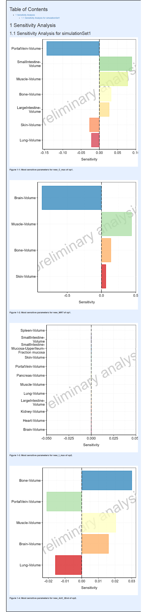

Overview
The sensitivity task aims at generating plots showing PK parameter sensitivity to variations of model input parameters. This vignette presents example workflows for setting up, evaluating and visualizing sensitivity analyses for both a mean model and a population.
Inputs files required for sensitivity analysis
The only input file required for running a sensitivity analysis on a
mean model is the .pkml simulation file. The path to this
file (either the absolute path or the relative path with respect to the
workflowFolder directory) is specified as a string:
simulationFile <- system.file("extdata", "caffeine-simulation.pkml",
package = "ospsuite.reportingengine"
)For population sensitivity analyses, the user needs to similarly
specify paths to .csv files containing data on the
populations to be studied:
populationFile1 <- system.file("extdata", "pop1.csv",
package = "ospsuite.reportingengine"
)
populationFile2 <- system.file("extdata", "pop2.csv",
package = "ospsuite.reportingengine"
)Results obtained from the calculateSensitivity task are
stored as csv files within the SensitivityResults
subdirectory of the workflowFolder directory. These results
are required in order to perform the plotSensitivity task,
which generates plots of the sensitivity analysis results.
Specification of quantities analyzed: model outputs and PK parameters
A sensitivity analysis will compute the variation in a scalar
function of a time-series trajectory of a model output in response to
variations in model variables. The model outputs are specified using
paths to simulated quantities within the model. The scalar functions are
PK parameter quantities such as C_max or AUC.
Although the sensitivity analysis for a mean model or an individual
within a population is evaluated for all PK parameters, the user has the
option of specifying the subset of PK parameters for which sensitivity
plots are to be generated. In addition, the user has the option to set
custom display names for both the selected model outputs and PK
parameters used in the sensitivity analysis.
Sets of output and PK parameter combinations for the sensitivity analysis are defined as follows:
output1 <- Output$new(
path = "Organism|Lung|Interstitial|Caffeine|Concentration", displayName = "op1",
pkParameters = c(
PkParameterInfo$new("C_max", "new_C_max"),
PkParameterInfo$new("MRT", "new_MRT")
)
)and
output2 <- Output$new(
path = "Organism|ArterialBlood|Plasma|Caffeine|Concentration", displayName = "op2",
pkParameters = c(
PkParameterInfo$new("t_max", "new_t_max"),
PkParameterInfo$new("AUC_tEnd", "new_AUC_tEnd")
)
)Here, output1 and output2 are
Output objects. The path input to the
constructors of these objects gives the path to the model output. For
example, the path input for output1 points to
the concentration of caffeine in lung interstitial tissue,
Organism|Lung|Interstitial|Caffeine|Concentration. This
model output is given the display name op1. The PK
parameters chosen for this example are the C_max and
MRT, which are given the display names
new_C_max and new_MRT, respectively.
Similarly, output2 points to the model output with path
Organism|ArterialBlood|Plasma|Caffeine|Concentration. The
PK parameters selected for output2 are t_max
and AUC_tEnd, for which the respective display names
new_t_max and new_AUC_tEnd will be used.
Mean model workflow
The mean model workflow operates on SimulationSet
objects. These objects store the path to the model simulation
(.pkml) file as well as the Output objects
(described above). A descriptive name for the SimulationSet
object can be provided using the simulationSetName field of
the SimulationSet constructor. For the mean model workflow,
a SimulationSet object is created as follows:
ms <- SimulationSet$new(
simulationSetName = "simulationSet1",
simulationFile = simulationFile,
outputs = c(output1, output2)
)A mean model workflow object is then instantiated using the
SimulationSet object ms as follows:
mwf <- MeanModelWorkflow$new(
simulationSets = ms,
workflowFolder = "meanSensitivityExample"
)In this mean model workflow, the tasks will consist of a sensitivity analysis followed by generation of plots of the sensitivity analysis results. These two tasks are activated as follows:
mwf$simulate$activate()
mwf$calculateSensitivity$activate()
mwf$plotSensitivity$activate()The model parameters to be perturbed in the sensitivity analysis are next set:
mwf$calculateSensitivity$settings$variableParameterPaths <- c(
"Organism|Heart|Volume",
"Organism|Lung|Volume",
"Organism|Kidney|Volume",
"Organism|Brain|Volume",
"Organism|Muscle|Volume",
"Organism|LargeIntestine|Volume",
"Organism|PortalVein|Volume",
"Organism|Spleen|Volume",
"Organism|Skin|Volume",
"Organism|Pancreas|Volume",
"Organism|SmallIntestine|Mucosa|UpperIleum|Fraction mucosa",
"Organism|SmallIntestine|Volume",
"Organism|Lumen|Effective surface area variability factor",
"Organism|Bone|Volume",
"Organism|Stomach|Volume"
)The properties of the sensitivity plots to be generated are set next.
The field totalSensitivityThreshold is used to filter out
from the sensitivity plots any model variables that contribute little to
the total sensitivity of the model. The
maximalParametersPerSensitivityPlot field limits the number
of model variables to be displayed in sensitivity plots. The axis font
size is set using the parameters xAxisFontSize and
yAxisFontSize.
mwf$plotSensitivity$settings <- SensitivityPlotSettings$new(
totalSensitivityThreshold = 0.9,
maximalParametersPerSensitivityPlot = 12,
xAxisFontSize = 10,
yAxisFontSize = 10
)With the calculateSensitivity and
plotSensitivity tasks now set up, the sensitivity
evaluation and plot are started with the command
runWorkflow:
mwf$runWorkflow()The output report, containing the mean model sensitivity plots from this example, is shown below.
Report
Population model workflow
Unlike the mean model sensitivity analysis, a population sensitivity
analysis depends on the outcomes of the
calculatePKParameters task for the population. This task,
in turn, turn depends on the results of the simulate task
for the population. The population sensitivity analysis proceeds as
follows:
Step 1) The model is simulated for the entire population using the
simulatetask.Step 2) Using the
calculatePKParameterstask, the PK parameters of each user-specified model output are calculated for each individual in the population based on their simulation results (evaluated in Step 1). For each PK parameter, the computations in Step 2 result in a distribution of that parameter over the entire population.Step 3) The population sensitivity analysis of a PK parameter of a model output is composed of sensitivity analyses, similar to the mean model sensitivity analysis, conducted for a selection of individuals within the population. The individuals chosen for the sensitivity analysis are those with PK parameters values that lie closest to user-specified quantiles of the pk parameter distributions computed in Step 2.
In this example, the sensitivity analysis will be conducted for two populations in parallel. In the first step, the model outputs to be analyzed are defined:
populationOutputs <- c(output1, output2)Next, PopulationSimulationSet objects are defined for
each of the two populations:
ps1 <- PopulationSimulationSet$new(
simulationSetName = "popSimulationSet1",
simulationFile = simulationFile,
populationFile = populationFile1,
outputs = populationOutputs
)
ps2 <- PopulationSimulationSet$new(
simulationSetName = "popSimulationSet2",
simulationFile = simulationFile,
populationFile = populationFile2,
outputs = populationOutputs
)With this setup, the sensitivity of PK parameters of
output1 and output2 will be analyzed for the
two populations. The two PopulationSimulationSet objects
are then used to create a PopulationWorkflow, the results
of which are to be placed in the root directory
./popSensitivityExample:
pwf <- PopulationWorkflow$new(
simulationSets = list(ps1, ps2),
workflowFolder = "popSensitivityExample",
workflowType = PopulationWorkflowTypes$parallelComparison
)Next, the required tasks of the workflow are activated. The sensitivity analysis and sensitivity plot tasks are activated using the commands
pwf$calculateSensitivity$activate()
pwf$plotSensitivity$activate()The population sensitivity analysis depends on the PK parameter
calculations for the population, which in turn depend on population
simulation results. If these prerequisite tasks (simulate
and calculatePKParameters) have not previously been run,
they must also be activated:
pwf$simulate$activate()
pwf$calculatePKParameters$activate()The variables to be perturbed in the sensitivity analysis are specified as follows:
pwf$calculateSensitivity$settings$variableParameterPaths <- c(
"Organism|Heart|Volume",
"Organism|Lung|Volume",
"Organism|Kidney|Volume",
"Organism|Brain|Volume",
"Organism|Muscle|Volume",
"Organism|LargeIntestine|Volume",
"Organism|PortalVein|Volume",
"Organism|Spleen|Volume",
"Organism|Skin|Volume",
"Organism|Pancreas|Volume",
"Organism|SmallIntestine|Mucosa|UpperIleum|Fraction mucosa",
"Organism|SmallIntestine|Volume",
"Organism|Lumen|Effective surface area variability factor",
"Organism|Bone|Volume",
"Organism|Stomach|Volume"
)The individuals within the population for which sensitivity will be
evaluated are those with PK parameter values (as evaluated in the
calculatePKParameters task) that lie closes to
user-specified quantiles of the population’s PK parameter distributions.
These quantiles are specified as follows:
pwf$calculateSensitivity$settings$quantileVec <- c(0.25, 0.5, 0.75)As with the mean model sensitivity plot, the population sensitivity
plot is configured using an instance of a
SensitivityPlotSettings object:
pwf$plotSensitivity$settings <- SensitivityPlotSettings$new(
totalSensitivityThreshold = 0.9,
maximalParametersPerSensitivityPlot = 12,
xAxisFontSize = 10,
yAxisFontSize = 10
)The population sensitivity workflow is run using the command:
pwf$runWorkflow()The results of the population sensitivity analysis are found in
multiple .csv files within the
SensitivityResults sub-directory of the workflow folder, as
shown in the following figure:
#> [1] FALSE
Two sets of files make up the population sensitivity analysis results
for this example, each corresponding to one of the
PopulationSimulationSet objects (named
popSimulationSet1 and popSimulationSet2). For
each set, there is one index file. The name of the index file is
prefixed with the name of the PopulationSimulationSet
object and carries the suffix
-popSensitivityResultsIndex.csv). The index file
popSimulationSet1-popSensitivityResultsIndex.csv contains
the names of the individual sensitivity analysis results files (found
within the SensitivityResults sub-directory of the workflow
folder) obtained for the PopulationSimulationSet object
popSimulationSet1. Its contents are shown in the following
figure:
#> [1] FALSE
Two output paths are shown corresponding to output1
(pink), output2 (blue). Note that, as per the definitions
of output1 and output2, the only PK parameters
analyzed for those two outputs are C_max and
MRT for output1 and t_max and
AUC_tEnd for output2. For each model output
and PK parameter combination, there are sensitivity analysis result
files for three individuals given under the Filename
column, each corresponding to one of the quantiles specified using
pwf$calculateSensitivity$settings$quantileVec.
The output report, containing the population sensitivity plots from this example, is shown below.